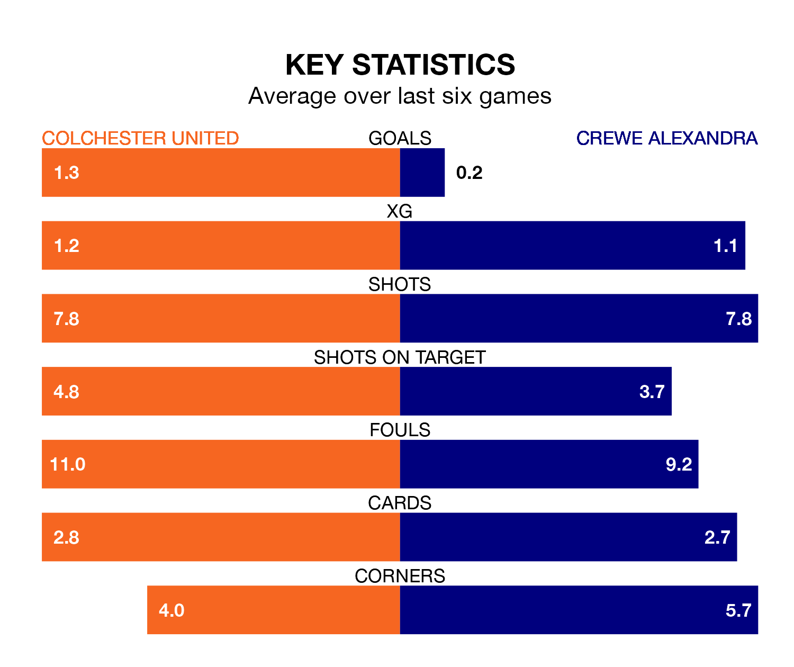

Colchester United host Crewe Alexandra on Saturday at the JobServe Community Stadium in EFL League Two.
In their last league match, on Tuesday, Colchester lost to Doncaster Rovers 4-1 at home, with their goal scored by Jayden Seurier.
Crewe also lost, 3-0 at home against Wrexham on April 20.
Colchester are 22nd in the table after 45 games, of which they have won 11 and drawn 11, earning 44 points.
Crewe are 16 places ahead of United in sixth, with 19 wins and 13 draws putting them on 70 points.
In the last 10 years, Colchester and Crewe have played each other on 14 occasions. Colchester won five of them, Crewe seven, and they drew twice.
On average, the U's scored 1.9 goals and the Railwaymen 1.1 in those matches.
Their last meeting was on September 23, when Crewe won 2-1 at home.
With 58 goals in 45 games so far this season, the U's are scoring at below the league average rate with 1.3 goals per game. And they are conceding more than average, letting in 79 goals at a rate of 1.8 per game.
The Railwaymen, meanwhile, are average scorers, with 1.5 goals per game. They have conceded 1.4 goals per game.
The home team are in disappointing form in EFL League Two, with two wins and four losses from their last six games.
With a win and two draws over that period, the visitors' form is slightly worse – they have taken five points from 18, compared to Colchester's six.
Updated: 07:59 (UTC), 26/04/24